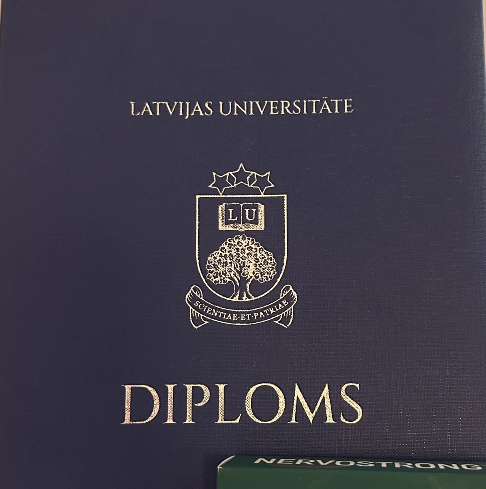
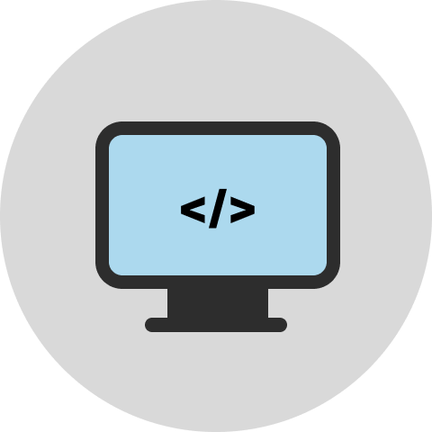
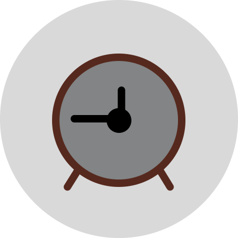
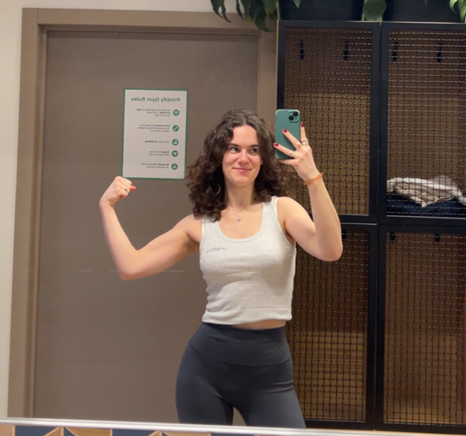

Pilna laika darbs
Maksas reklāmas, datu analīze un kampaņu optimizācija.
Alise Rimkēviča
Stāsts par nedēļu, kurā satiekas studijas, digitālais mārketings, freelance projekti un mēģinājumi atrast līdzsvaru.
Ieskaties manā nedēļāMana darba nedēļa sākas ar plānošanu, kalendāra pārskatīšanu un mēģinājumu saprast, kurā brīdī iespējams apvienot studijas, darbu un personīgos pienākumus. Datorikas studenta ikdiena nav tikai lekcijas un mājasdarbi - tā ir arī spēja ātri pārslēgties starp dažādiem uzdevumiem. Vienā brīdī es pārskatu e-studiju materiālus, nākamajā jau atbildu uz darba ziņām vai gatavoju reklāmas kampaņas. Liela nozīme ir digitālajiem rīkiem: kalendāram, piezīmēm, failu mapēm un atgādinājumiem. Bez tiem nedēļa ātri kļūtu haotiska. Ikdienā cenšos saglabāt ritmu - no rīta izdarīt svarīgāko, dienas laikā koncentrēties darbam, bet vakarā atstāt laiku studijām vai freelance projektiem. Šāds režīms nav vienmēr viegls, taču tas palīdz iemācīties disciplīnu.


Studijas Datorikas nodaļā manā nedēļā ieņem ļoti svarīgu lomu, jo tās dod teorētisko pamatu un vienlaikus liek praktiski risināt problēmas. Lekcijās un patstāvīgajos darbos bieži jādomā strukturēti, jāanalizē uzdevumi un jāmeklē risinājumi, kas sākumā ne vienmēr ir acīmredzami. Studijas programmēšanā ir attīstījušas prasmi risināt dažādas problēmas un nebaidīties no izaicinājumiem. Īpaši vērtīgi ir brīži, kad studiju saturs saslēdzas ar reālo pieredzi darbā vai freelance projektos. Piemēram, programmēšanas, tīmekļa vietņu veidošanas un digitālo rīku tēmas palīdz labāk saprast, kā darbojas mūsdienu tiešsaistes vide. Studiju process prasa pacietību, jo ne visu iespējams apgūt uzreiz. Tomēr katra nedēļa parāda, ka zināšanas veidojas pakāpeniski - no lekcijām, kļūdām, jautājumiem un praktiskas izmēģināšanas.
Paralēli studijām es jau 3 gadus strādāju pilna laika darbu kā digitālā mārketinga speciāliste, kā arī brīvajos brīžos veidoju freelance tīmekļa vietnes un reklāmas projektus. Tas nozīmē, ka mana nedēļa bieži ir sadalīta vairākās lomās. Dienas laikā galvenā uzmanība ir darbam - reklāmu plānošanai, datu analīzei, kampaņu optimizācijai un komunikācijai ar kolēģiem. Vakaros vai brīvdienu brīžos pievēršos freelance uzdevumiem, piemēram, mājaslapu veidošanai vai klientu reklāmas kontiem. Lai tas viss būtu iespējams, ļoti svarīga ir laika plānošana. Es mēģinu noteikt prioritātes un nesākt visu vienlaikus. Šī pieredze reizēm ir nogurdinoša, bet tā palīdz ātri augt gan profesionāli, gan personīgi.
Maksas reklāmas, datu analīze un kampaņu optimizācija.

Tīmekļa vietnes, reklāmas konti un mazi klientu projekti.

Kalendārs, prioritātes un mēģinājums saglabāt līdzsvaru.
Lai nedēļa nesastāvētu tikai no darba un studijām, man ir svarīgi atrast laiku arī hobijiem. Tie palīdz pārslēgt uzmanību un atgūt enerģiju pēc garām dienām pie datora. Viens no veidiem, kā atslēgties, ir fiziskas aktivitātes, piemēram, sporta zāle vai pastaiga. Tas palīdz sakārtot domas un samazināt spriedzi, kas rodas no termiņiem un daudzajiem uzdevumiem. Brīvajos brīžos novērtēju arī mūziku, gleznošanu, mierīgus vakarus un laiku bez ekrāniem, lai gan tas ne vienmēr izdodas. Hobiji manā nedēļā nav tikai izklaide - tie ir veids, kā saglabāt līdzsvaru. Ja nav atpūtas, arī produktivitāte samazinās, tāpēc šī sadaļa man ir tikpat svarīga kā studijas vai darbs.


Viena darba nedēļa Datorikas nodaļas studenta dzīvē parāda, ka studijas nav izolētas no pārējās dzīves. Tās savienojas ar darbu, personīgajiem projektiem, digitālajiem rīkiem un ikdienas izvēlēm. Manā gadījumā šī nedēļa ir īpaši intensīva, jo līdzās studijām ir arī pilna laika darbs un freelance projekti. Tas prasa disciplīnu, bet vienlaikus dod iespēju mācīties ļoti praktiski. Datorikas prasmes palīdz risināt tehniskos jautājumus, bet darba pieredze palīdz saskatīt, kā zināšanas izmantot reālās situācijās. Galvenais secinājums ir tāds, ka līdzsvars neveidojas pats no sevis - tas ir jāplāno. Šī nedēļa nav perfekta, bet tā ļoti labi raksturo manu ikdienu. Es vēl joprojām mācos atrast balansu.